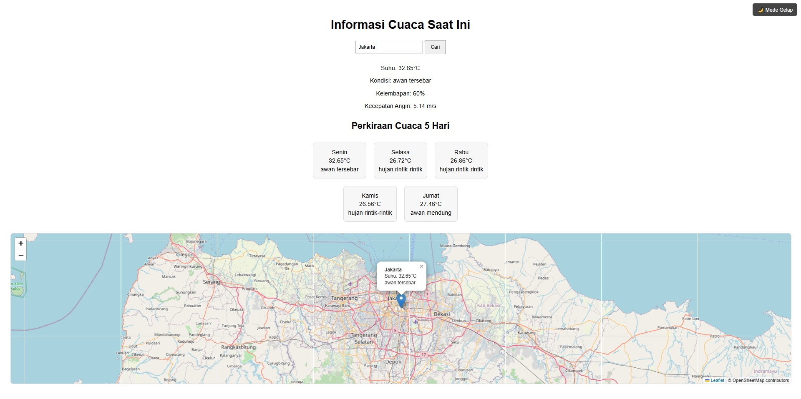
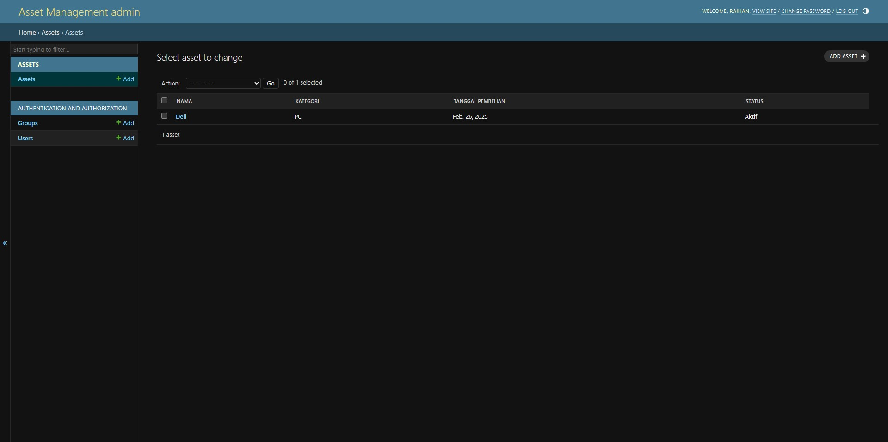
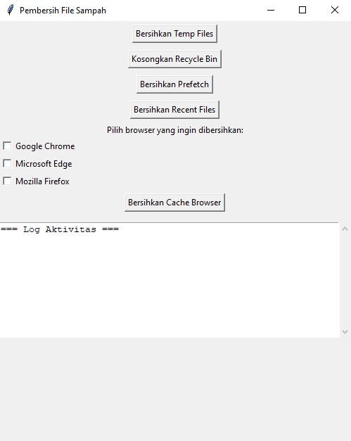
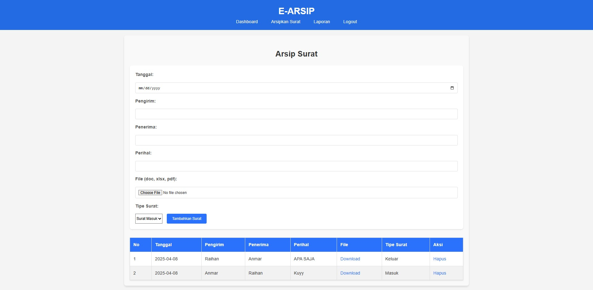

🌦️ Aplikasi Cuaca
Menampilkan info cuaca real-time menggunakan OpenWeather API dengan antarmuka yang responsif.
🔗 Lihat di GitHub

📦 Manajemen Aset
Aplikasi web untuk memantau dan mengelola aset atau inventaris perusahaan dan organisasi secara digital berbasis Web.
🔗 Lihat di GitHub

🧹 Pembersih Sistem
Otomatisasi pembersihan cache & file sampah browser untuk menjaga performa komputer.
🔗 Lihat di GitHub

📂 E-Arsip
Platform digitalisasi arsip dokumen menggunakan web framework untuk efisiensi manajemen data.
🔗 Lihat di GitHub📊 ERP Sederhana
Aplikasi ERP berbasis Laravel & MySQL untuk manajemen inventaris dan laporan keuangan sederhana.
🔗 Lihat di GitHub